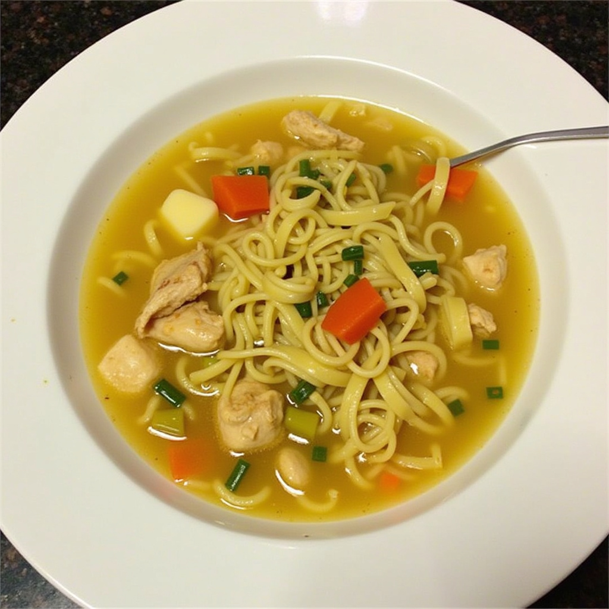

La mejor sopa de fideo en los restaurantes de Odin, con buen sabor y
preparado por chefs profesionales.
Lista de ingredientes
- Paquete de fideo
- Jitomates maduros
- Clado de pollo
Pasos a seguir.
- Freír el fideo en una olla con poco aceite hasta que dore.
- Licuar el jitomate con cebolla y ajo, y verter sobre el fideo.
- Agregar el caldo y dejar hervir hasta que el fideo esté suave.

Regresar al menú.